Fureur de l'ouragan
(Wrath of the Storm)
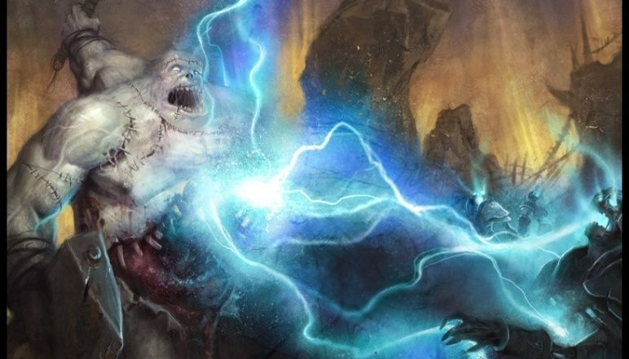
Charges
:
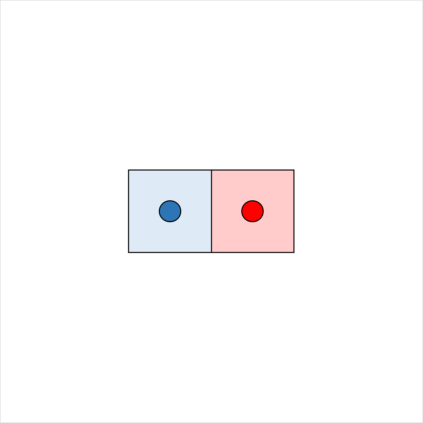
Si touché au corps à corps (1,5m) :
en réaction JdS(Dex)
⇒ 2d8 foudre/tonnerre sinon moitié
en réaction JdS(Dex)
⇒ 2d8 foudre/tonnerre sinon moitié
Vous pouvez réprimander vos attaquants avec la puissance du tonnerre.
Lorsqu’une créature que vous pouvez voir dans un rayon de 1,50 mètre autour de vous vous touche, vous pouvez utiliser votre réaction pour obliger l’attaquant à effectuer un jet de sauvegarde de Dextérité.
En cas d’échec, la créature subit 2d8 dégâts de foudre ou de tonnerre (selon votre choix), ou la moitié en cas de réussite.
Vous pouvez utiliser cette capacité un nombre de fois égal à votre modificateur de Sagesse (minimum 1). Vous regagnez toutes vos charges après un repos long.
Lorsqu’une créature que vous pouvez voir dans un rayon de 1,50 mètre autour de vous vous touche, vous pouvez utiliser votre réaction pour obliger l’attaquant à effectuer un jet de sauvegarde de Dextérité.
En cas d’échec, la créature subit 2d8 dégâts de foudre ou de tonnerre (selon votre choix), ou la moitié en cas de réussite.
Vous pouvez utiliser cette capacité un nombre de fois égal à votre modificateur de Sagesse (minimum 1). Vous regagnez toutes vos charges après un repos long.
Colère destructrice
(Destructive Wrath)
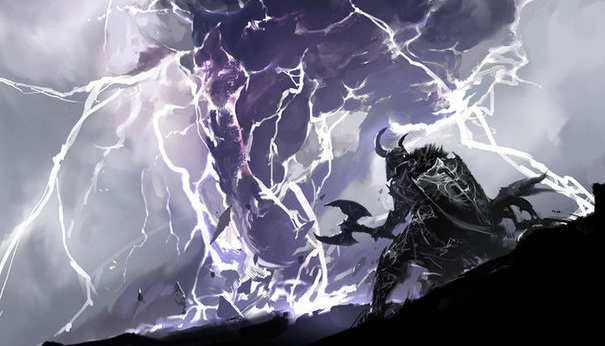
Charges
:
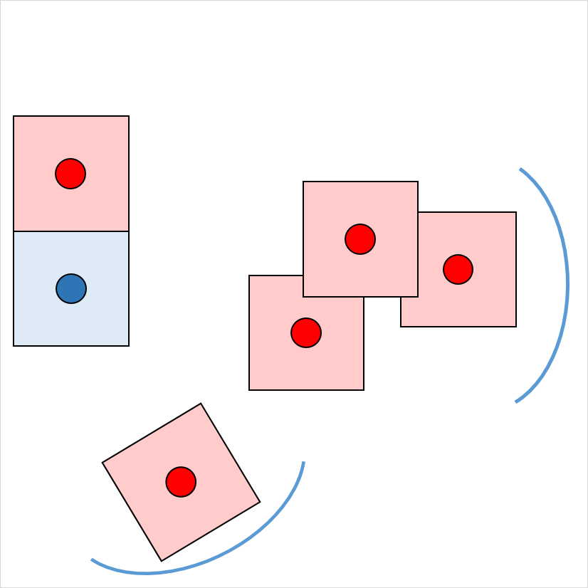
Maximise les dégâts d'une attaque de foudre ou de tonnerre.
Vous pouvez utiliser votre Canalisation d'énergie divine pour manier la puissance de la tempête avec une férocité incontrôlée.
Lorsque vous infligez des dégâts de foudre ou de tonnerre, vous pouvez utiliser votre Canalisation d'énergie divine pour effectuer des dégâts maximum au lieu de lancer des dés.
Lorsque vous infligez des dégâts de foudre ou de tonnerre, vous pouvez utiliser votre Canalisation d'énergie divine pour effectuer des dégâts maximum au lieu de lancer des dés.
Frappe éclair
(Thunderbolt Strike)
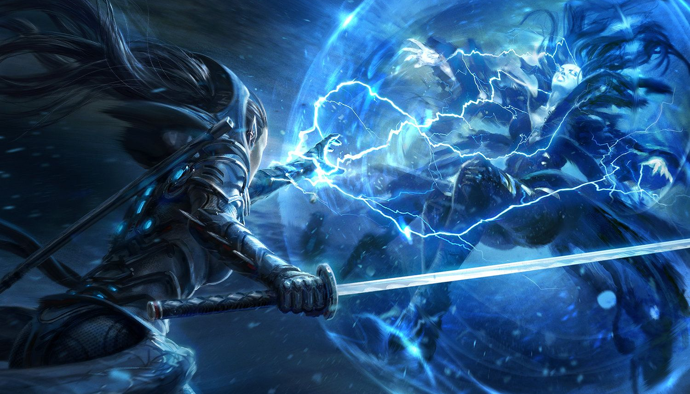
Type de dégâts
:
Foudre
Lorsque vous infligez des dégâts de foudre à une créature de taille G ou inférieure, vous pouvez également la repousser à 3 mètres de vous.
Lorsque vous infligez des dégâts de foudre à une créature de taille G ou inférieure, vous pouvez également la repousser à 3 mètres de vous.
Destruction des morts-vivants
(Destroy undead)
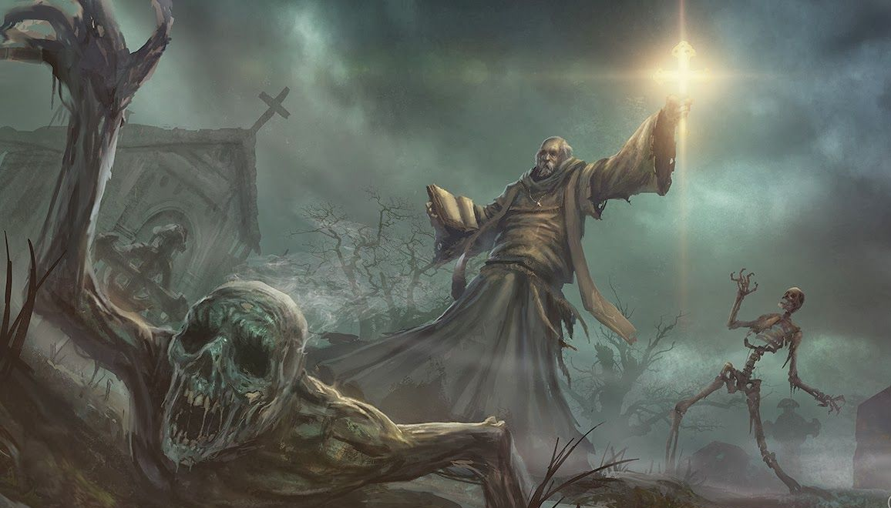
Charges
:
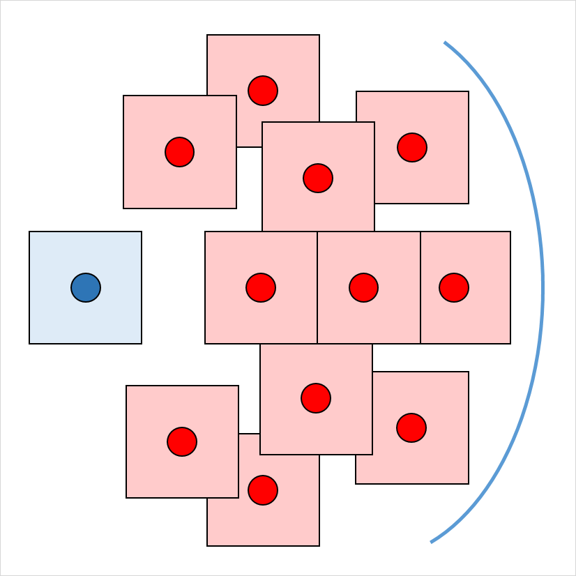
Fait fuire les morts-vivants à portée de vue. Lors morts-vivants faibles sont détruits.
Au prix d'une action, vous présentez votre symbole sacré en psalmodiant une prière contre les morts-vivants. Chaque mort-vivant qui peut vous voir ou vous entendre et qui se trouve à 9 mètres ou moins de vous doit effectuer un jet de sauvegarde de Sagesse. Si la créature rate son jet de sauvegarde, elle est renvoyée pendant 1 minute ou jusqu'à ce qu'elle prenne des dégâts.
Renvoi : Une créature renvoyée doit passer ses actions à essayer de s'éloigner le plus loin possible de vous et ne peut volontairement se rapprocher à 9 mètres ou moins de vous. Elle ne peut pas utiliser de réactions et peut utiliser ses actions seulement pour Foncer ou essayer de s'échapper d'un effet immobilisant. S'il n'y a nulle part où aller, la créature peut utiliser l'action Esquiver.
Destruction : Quand un mort-vivant rate son jet de sauvegarde contre votre capacité de Renvoi des morts-vivants, la créature est immédiatement détruite si son FP est égal ou inférieur à 1
Renvoi : Une créature renvoyée doit passer ses actions à essayer de s'éloigner le plus loin possible de vous et ne peut volontairement se rapprocher à 9 mètres ou moins de vous. Elle ne peut pas utiliser de réactions et peut utiliser ses actions seulement pour Foncer ou essayer de s'échapper d'un effet immobilisant. S'il n'y a nulle part où aller, la créature peut utiliser l'action Esquiver.
Destruction : Quand un mort-vivant rate son jet de sauvegarde contre votre capacité de Renvoi des morts-vivants, la créature est immédiatement détruite si son FP est égal ou inférieur à 1
Frappe divine
(Divine strike)
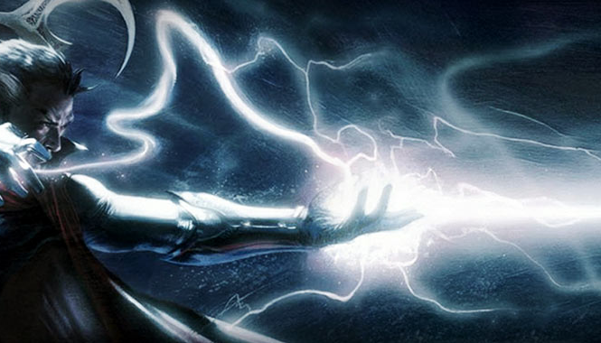
Type de dégâts
:
Tonnerre
Ajoute des dégâts de tonnerre lors d'une attaque.
Au niveau 8, vous gagnez la possibilité d’imprégner votre arme d’énergie divine.
Une fois à chacun de vos tours, lorsque vous touchez une créature avec une attaque d'arme, vous pouvez infliger 1d8 dégâts de tonnerre supplémentaires. Lorsque vous atteignez le niveau 14, les dégâts supplémentaires passent à 2d8.
Une fois à chacun de vos tours, lorsque vous touchez une créature avec une attaque d'arme, vous pouvez infliger 1d8 dégâts de tonnerre supplémentaires. Lorsque vous atteignez le niveau 14, les dégâts supplémentaires passent à 2d8.
Intervention divine
(Divine intervention)

Recharge
:
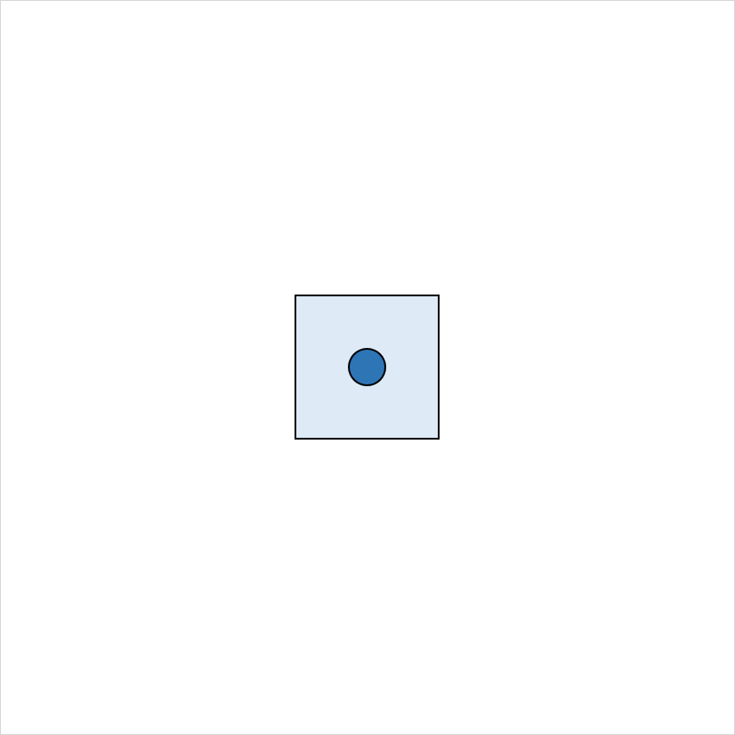
Décrivez l'aide que vous recherchez, et lancez 1d100.
Si vous obtenez un nombre égal ou inférieur à votre niveau de clerc, votre divinité intervient.
Si vous obtenez un nombre égal ou inférieur à votre niveau de clerc, votre divinité intervient.
À partir du niveau 10, vous pouvez faire appel à votre divinité pour qu'elle intervienne en cas de besoin réel. Implorer l'aide de votre divinité vous oblige à utiliser votre action. Décrivez l'aide que vous recherchez, et lancez 1d100. Si vous obtenez un nombre égal ou inférieur à votre niveau de clerc, votre divinité intervient. Le MD choisit la nature de l'intervention ; l'effet d'un sort de clerc ou d'un sort de domaine est approprié. Si votre divinité intervient, vous ne pouvez plus utiliser cette capacité durant les 7 prochains jours. Dans le cas contraire, vous pouvez l'utiliser à nouveau après avoir terminé un repos long.
Au niveau 20, l'appel à votre divinité réussit automatiquement ; aucun jet n'est nécessaire.
Au niveau 20, l'appel à votre divinité réussit automatiquement ; aucun jet n'est nécessaire.
Corruption de Zrin-Hala
(Dark gift of Zrin-Hala)
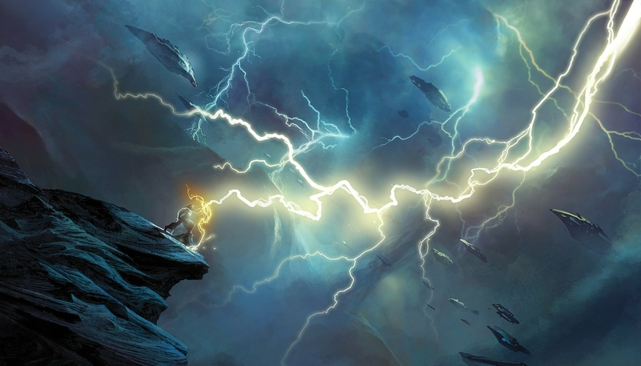
Charges
:
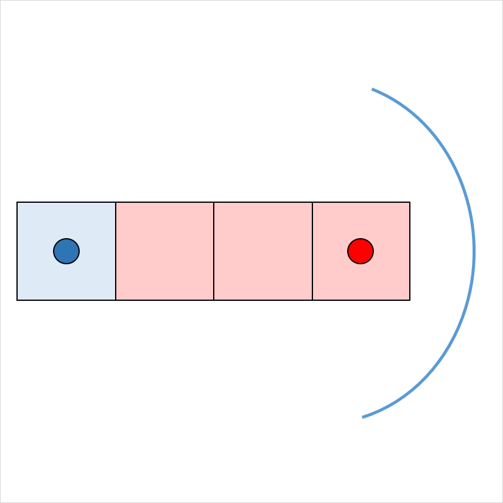
Permet de lancer 3 fois le sort Eclair.
Une fois les 3 charges utilisées, la moitié du visage du lanceur se fige à jamais.
Une fois les 3 charges utilisées, la moitié du visage du lanceur se fige à jamais.
« Mon nom est Zrin-Hala, l'orage hurlant. Pensez-vous pouvoir résister au vrai pouvoir des tempêtes ? C’est ce que je peux vous offrir. Faire corps avec une tempête, du moins tant que vous y survivez. »
Un rayon de foudre formant une ligne d'une longueur de 30 mètres et d'une largeur de 1,50 mètre jaillit de vous dans la direction de votre choix. Toute créature sur la ligne doit réussir un jet de sauvegarde de Dextérité sans quoi elle subit 8d6 dégâts de foudre. Si elle réussit, les dégâts sont réduits de moitié.
L'éclair enflamme les objets inflammables qui ne sont pas portés ou transportés.
Aux niveaux supérieurs. Lorsque vous lancez ce sort en utilisant un emplacement de sort de niveau 4 ou plus, les dégâts augmentent de 1d6 pour chaque niveau d'emplacement supérieur au niveau 3.
Un rayon de foudre formant une ligne d'une longueur de 30 mètres et d'une largeur de 1,50 mètre jaillit de vous dans la direction de votre choix. Toute créature sur la ligne doit réussir un jet de sauvegarde de Dextérité sans quoi elle subit 8d6 dégâts de foudre. Si elle réussit, les dégâts sont réduits de moitié.
L'éclair enflamme les objets inflammables qui ne sont pas portés ou transportés.
Aux niveaux supérieurs. Lorsque vous lancez ce sort en utilisant un emplacement de sort de niveau 4 ou plus, les dégâts augmentent de 1d6 pour chaque niveau d'emplacement supérieur au niveau 3.
Spécialiste des armures lourdes
(Heavy armor master)

Prérequis
:
Maîtrise des armures lourdes
Augmente la Force de 1.
Réduit des 3 les dégâts contondants, perforants et tranchants non magiques.
Réduit des 3 les dégâts contondants, perforants et tranchants non magiques.
Vous pouvez utiliser votre armure pour détourner des attaques qui en auraient tué plus d'un. Vous obtenez les avantages suivants :
- Augmentez votre valeur de Force de 1, pour un maximum de 20.
- Lorsque vous portez une armure lourde, les dégâts contondants, perforants et tranchants que vous recevez d'armes non magiques sont réduits de 3.